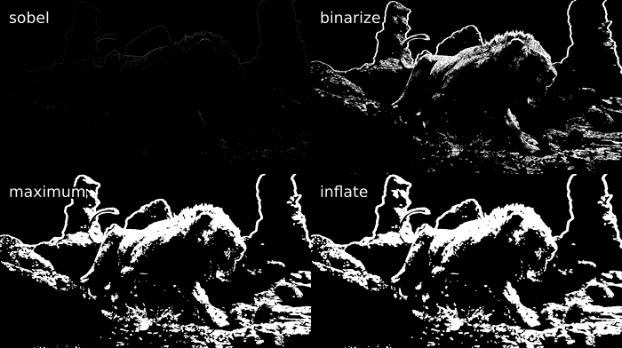
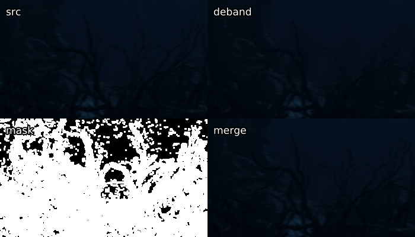
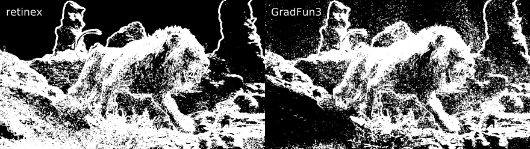
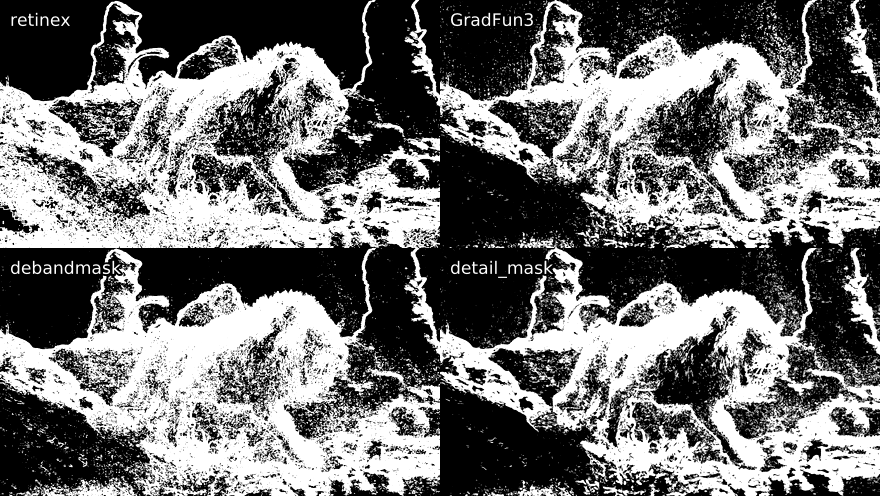

this needs to be reformatted
Masking is a less straightforward topic. The idea is to limit the application of filters according to the source image's properties. A mask will typically be grayscale, whereby how much of the two clips in question are applied is determined by the mask's brightness. So, if you do
mask = mask_function(src)
filtered = filter_function(src)
merge = core.std.MaskedMerge(src, filtered, mask)
The filtered clip will be used for every completely white pixel in
mask, and the src clip for every black pixel, with in-between values
determining the ratio of which clip is applied. Typically, a mask will
be constructed using one of the following three functions:
-
std.Binarize: This simply separates pixels by whether they are above or below a threshold and sets them to black or white accordingly. -
std.Expr: Known to be a very complicated function. Applies logic via reverse Polish notation. If you don't know what this is, read up on Wikipedia. Some cool things you can do with this are make some pixels brighter while keeping others the same (instead of making them dark as you would withstd.Binarize):std.Expr("x 2000 > x 10 * x ?"). This would multiply every value above 2000 by ten and leave the others be. One nice use case is for in between values:std.Expr("x 10000 > x 15000 < and x {} = x 0 = ?".format(2**src.format.bits_per_sample - 1)).
This makes every value between 10 000 and 15 000 the maximum value allowed by the bit depth and makes the rest zero, just like how astd.Binarizemask would. Many other functions can be performed via this. -
std.Convolution: In essence, apply a matrix to your pixels. The documentation explains it well, so just read that if you don't get it. Lots of masks are defined via convolution kernels. You can use this to do a whole lot of stuff. For example, if you want to average all the values surrounding a pixel, dostd.Convolution([1, 1, 1, 1, 0, 1, 1, 1, 1]). To illustrate, let's say you have a pixel with the value \(\mathbf{1}\) with the following \(3\times3\) neighborhood:\[\begin{bmatrix} 0 & 2 & 4 \\ 6 & \mathbf{1} & 8 \\ 6 & 4 & 2 \end{bmatrix}\]
Now, let's apply a convolution kernel:
\[\begin{bmatrix} 2 & 1 & 3 \\ 1 & 0 & 1 \\ 4 & 1 & 5 \end{bmatrix}\]
This will result in the pixel 1 becoming: \[\frac{1}{18} \times (2 \times 0 + 1 \times 2 + 3 \times 4 + 1 \times 6 + 0 \times \mathbf{1} + 1 \times 8 + 4 \times 6 + 1 \times 4 + 5 \times 2) = \frac{74}{18} \approx 4\]
So, let's say you want to perform what is commonly referred to as a simple "luma mask":
y = core.std.ShufflePlanes(src, 0, vs.GRAY)
mask = core.std.Binarize(y, 5000)
merge = core.std.MaskedMerge(filtered, src, mask)
In this case, I'm assuming we're working in 16-bit. What std.Binarize
is doing here is making every value under 5000 the lowest and every
value above 5000 the maximum value allowed by our bit depth. This means
that every pixel above 5000 will be copied from the source clip.
Let's try this using a filtered clip which has every pixel's value
multiplied by 8:

Simple binarize masks on luma are very straightforward and often do a good job of limiting a filter to the desired area, especially as dark areas are more prone to banding and blocking.
A more sophisticated version of this is adaptive_grain from earlier in
this guide. It scales values from black to white based on both the
pixel's luma value compared to the image's average luma value. A more
in-depth explanation can be found on the creator's blog. We
manipulate this mask using a luma_scaling parameter. Let's use a very
high value of 500 here:

Alternatively, we can use an std.Expr to merge the clips via the
following logic:
if abs(src - filtered) <= 1000:
return filtered
elif abs(src - filtered) >= 30000:
return src
else:
return src + (src - filtered) * (30000 - abs(src - filtered)) / 29000
This is almost the exact algorithm used in mvsfunc.LimitFilter, which
GradFun3 uses to apply its bilateral filter. In VapourSynth, this
would be:
expr = core.std.Expr([src, filtered], "x y - abs 1000 > x y - abs 30000 > x x y - 30000 x y - abs - * 29000 / + x ? y ?")

Now, let's move on to the third option: convolutions, or more interestingly for us, edge masks. Let's say you have a filter that smudges details in your clip, but you still want to apply it to detail-free areas. We can use the following convolutions to locate horizontal and vertical edges in the image:
\[\begin{aligned} &\begin{bmatrix} 1 & 0 & -1 \\ 2 & 0 & -2 \\ 1 & 0 & -1 \end{bmatrix} &\begin{bmatrix} 1 & 2 & 1 \\ 0 & 0 & 0 \\ -1 & -2 & -1 \end{bmatrix}\end{aligned}\]
Combining these two is what is commonly referred to as a Sobel-type edge mask. It produces the following for our image of the lion:
 Now, this result is obviously rather boring. One can see a rough outline
of the background and the top of the lion, but not much more can be made
out.
Now, this result is obviously rather boring. One can see a rough outline
of the background and the top of the lion, but not much more can be made
out.
To change this, let's introduce some new functions:
-
std.Maximum/Minimum: Use this to grow or shrink your mask, you may additionally want to applycoordinates=[0, 1, 2, 3, 4, 5, 6, 7]with whatever numbers work for you in order to specify weights of the surrounding pixels. -
std.Inflate/Deflate: Similar to the previous functions, but instead of applying the maximum of pixels, it merges them, which gets you a slight blur of edges. Useful at the end of most masks so you get a slight transition between masked areas.
We can combine these with the std.Binarize function from before to get
a nifty output:
mask = y.std.Sobel()
binarize = mask.std.Binarize(3000)
maximum = binarize.std.Maximum().std.Maximum()
inflate = maximum.std.Inflate().std.Inflate().std.Inflate()

A common example of a filter that might smudge the output is an anti-aliasing or a debanding filter. In the case of an anti-aliasing filter, we apply the filter via the mask to the source, while in the case of the debander, we apply the source via the mask to the filtered source:
mask = y.std.Sobel()
aa = taa.TAAmbk(src, aatype=3, mtype=0)
merge = core.std.MaskedMerge(src, aa, mask)
deband = src.f3kdb.Deband()
merge = core.std.MaskedMerge(deband, src, mask)
We can also use a different edge mask, namely kgf.retinex_edgemask,
which raises contrast in dark areas and creates a second edge mask using
the output of that, then merges it with the edge mask produced using the
untouched image:

This already looks great. Let's manipulate it similarly to before and see how it affects a destructive deband in the twig area at the bottom:
deband = src.f3kdb.Deband(y=150, cb=150, cr=150, grainy=0, grainc=0)
mask = kgf.retinex_edgemask(src).std.Binarize(8000).std.Maximum()
merge = core.std.MaskedMerge(deband, src, mask)

While some details remain smudged, we've successfully recovered a very noticeable portion of the twigs. Another example of a deband suffering from detail loss without an edge mask can be found under figure 35 in the appendix.
Other noteworthy edge masks easily available in VapourSynth include:
-
std.Prewittis similar to Sobel. It's the same operator with the 2 switched out for a 1. -
tcanny.TCannyis basically a Sobel mask thrown over a blurred clip. -
kgf.kirschwill generate almost identical results toretinex_edgemaskin bright scenes, as it's one of its components. Slower than the others, as it uses more directions, but will get you great results.
Some edge mask comparisons can be found in the appendix under figures 26{reference-type="ref" reference="fig:16"}, 30{reference-type="ref" reference="fig:10"} and 34{reference-type="ref" reference="fig:23"}.
As a debanding alternative to edge masks, we can also use "range"
masks, which employ std.Minimum and std.Maximum to locate details.
The most well known example of this is the mask inside GradFun3. This
works as follows:
Then, two clips are created, one which will employ std.Maximum, while
the other obviously will use std.Minimum. These use special
coordinates depending on the mrad value given. If
\(\mathtt{mrad} \mod 3 = 1\), [0, 1, 0, 1, 1, 0, 1, 0] will be used as
coordinates. Otherwise, [1, 1, 1, 1, 1, 1, 1, 1] is used. Then, this
process is repeated with \(\mathtt{mrad} = \mathtt{mrad} - 1\) until
$\mathtt{mrad} = 0$. This all probably sounds a bit overwhelming, but
it's really just finding the maximum and minimum values for each pixel
neighborhood.
Once these are calculated, the minimized mask is subtracted from the
maximized mask, and the mask is complete. So, let's look at the output
compared to the modified retinex_edgemask from earlier:

Here, we get some more pixels picked up by the GradFun3 mask in the
skies and some brighter flat textures. However, the retinex-type edge
mask prevails in darker, more detailed areas. Computationally, our
detail mask is a lot quicker, however, and it does pick up a lot of what
we want, so it's not a bad choice.
Fortunately for us, this isn't the end of these kinds of masks. There
are two notable masks based on this concept: debandmask and
lvsfunc.denoise.detail_mask. The former takes our GradFun3 mask and
binarizes it according to the input luma's brightness. Four parameters
play a role in this process: lo, hi, lothr, and hithr. Values
below lo are binarized according to lothr, values above hi are
binarized according to hithr, and values in between are binarized
according to a linear scaling between the two thresholds:
\[\frac{\mathtt{mask} - \mathtt{lo}}{\mathtt{hi} - \mathtt{lo}} \times (\mathtt{hithr} - \mathtt{lothr}) + \mathtt{lothr}\]
This makes it more useful in our specific scenario, as the mask becomes
stronger in darks compared to GradFun3. When playing around with the
parameters, we can e.. lower lo so we our very dark areas aren't
affected too badly, lower lothr to make it stronger in these darks,
raise hi to enlarge our lo to hi gap, and raise hithr to weaken
it in brights. Simple values might be
lo=22 << 8, lothr=250, hi=48 << 8, hithr=500:

While not perfect, as this is a tough scene, and parameters might not be optimal, the difference in darks is obvious, and less banding is picked up in the background's banding.
Our other option for an altered GradFun3 is lvf.denoise.detail_mask.
This mask combines the previous idea of the GradFun3 mask with a
Prewitt-type edge mask.
First, two denoised clips are created using KNLMeansCL, one with half
the other's denoise strength. The stronger one has a GradFun3-type
mask applied, which is then binarized, while the latter has a Prewitt
edge mask applied, which again is binarized. The two are then combined
so the former mask gets any edges it may have missed from the latter
mask.
The output is then put through two calls of RemoveGrain, the first one
setting each pixel to the nearest value of its four surrounding pixel
pairs' (e.. top and bottom surrounding pixels make up one pair) highest
and lowest average value. The second call effectively performs the
following convolution:
\[\begin{bmatrix}
1 & 2 & 1 \\
2 & 4 & 2 \\
1 & 2 & 1
\end{bmatrix}\]
By default, the denoiser is turned off, but this is one of its
advantages for us in this case, as we'd like the sky to have fewer
pixels picked up while we'd prefer more of the rest of the image to be
picked up. To compare, I've used a binarize threshold similar to the one
used in the debandmask example. Keep in mind this is a newer mask, so
my inexperience with it might show to those who have played around with
it more:

Although an improvement in some areas, in this case, we aren't quite getting the step up we would like. Again, better optimized parameters might have helped.
In case someone wants to play around with the image used here, it's available in this guide's repository: https://git.concertos.live/Encode_Guide/mdbook-guide/src/branch/master/src/filtering/Pictures/lion.png.
{kind=link}
Additionally, the following functions can be of help when masking, limiting et cetera:
-
std.MakeDiffandstd.MergeDiff: These should be self-explanatory. Use cases can be applying something to a degrained clip and then merging the clip back, as was elaborated in the Denoising section. -
std.Transpose: Transpose (i.. flip) your clip. -
std.Turn180: Turns by 180 degrees. -
std.BlankClip: Just a frame of a solid color. You can use this to replace bad backgrounds or for cases where you've added grain to an entire movie but you don't want the end credits to be full of grain. To maintain TV range, you can usestd.BlankClip(src, color=[16, 128, 128]) for 8-bit black. Also useful for making area based masks. -
std.Invert: Self-explanatory. You can also just swap which clip gets merged via the mask instead of doing this. -
std.Limiter: You can use this to limit pixels to certain values. Useful for maintaining TV range (std.Limiter(min=16, max=235)). -
std.Median: This replaces each pixel with the median value in its neighborhood. Mostly useless. -
std.StackHorizontal/std.StackVertical: Stack clips on top of/next to each other. -
std.Merge: This lets you merge two clips with given weights. A weight of 0 will return the first clip, while 1 will return the second. The first thing you give it is a list of clips, and the second item is a list of weights for each plane. Here's how to merge chroma from the second clip into luma from the first:std.Merge([first, second], [0, 1]). If no third value is given, the second one is copied for the third plane. -
std.ShufflePlanes: Extract or merge planes from a clip. For example, you can get the luma plane withstd.ShufflePlanes(src, 0, vs.GRAY).
If you want to apply something to only a certain area, you can use the
wrapper rekt or rekt_fast. The latter only applies you function
to the given area, which speeds it up and is quite useful for
anti-aliasing and similar slow filters. Some wrappers around this exist
already, like rektaa for anti-aliasing. Functions in rekt_fast are
applied via a lambda function, so instead of src.f3kdb.Deband(), you
input rekt_fast(src, lambda x: x.f3kdb.Deband()).
One more very special function is std.FrameEval. What this allows you
to do is evaluate every frame of a clip and apply a frame-specific
function. This is quite confusing, but there are some nice examples in
VapourSynth's documentation:
http://www.vapoursynth.com/doc/functions/frameeval.html. Now, unless
you're interested in writing a function that requires this, you likely
won't ever use it. However, many functions use it, including
kgf.adaptive_grain, awf.FrameInfo, fvf.AutoDeblock, TAAmbk, and
many more. One example I can think of to showcase this is applying a
different debander depending on frame type:
import functools
def FrameTypeDeband(n, f, clip):
if clip.props['_PictType'].decode() == "B":
return core.f3kdb.Deband(clip, y=64, cr=0, cb=0, grainy=64, grainc=0, keep_tv_range=True, dynamic_grain=False)
elif clip.props['_PictType'].decode() == "P":
return core.f3kdb.Deband(clip, y=48, cr=0, cb=0, grainy=64, grainc=0, keep_tv_range=True, dynamic_grain=False)
else:
return core.f3kdb.Deband(clip, y=32, cr=0, cb=0, grainy=64, grainc=0, keep_tv_range=True, dynamic_grain=False)
out = core.std.FrameEval(src, functools.partial(FrameTypeDeband, clip=src), src)
If you'd like to learn more, I'd suggest reading through the Irrational Encoding Wizardry GitHub group's guide: https://guide.encode.moe/encoding/masking-limiting-etc.html and reading through most of your favorite Python functions for VapourSynth. Pretty much all of the good ones should use some mask or have developed their own mask for their specific use case.
Edge detection is also very thoroughly explained in a lot of digital image processing textbooks, e.g. Digital Image Processing by Gonzalez and Woods.